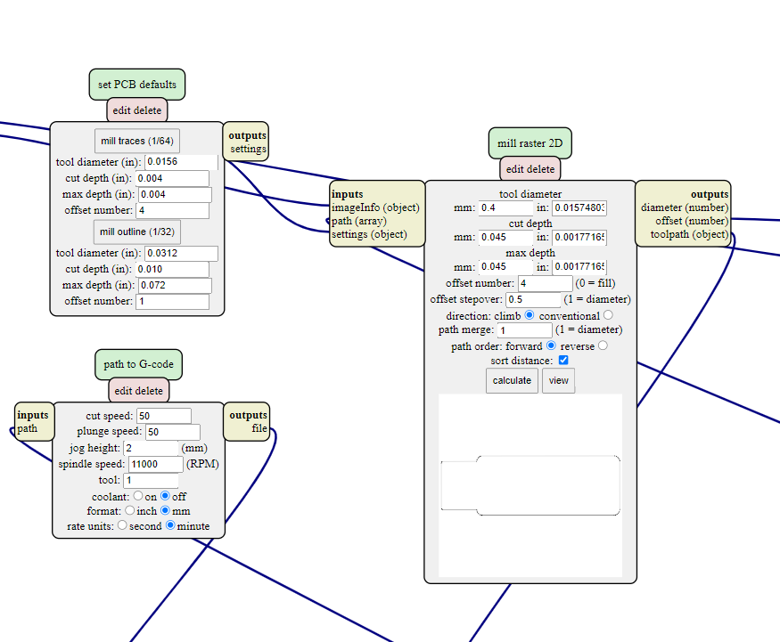
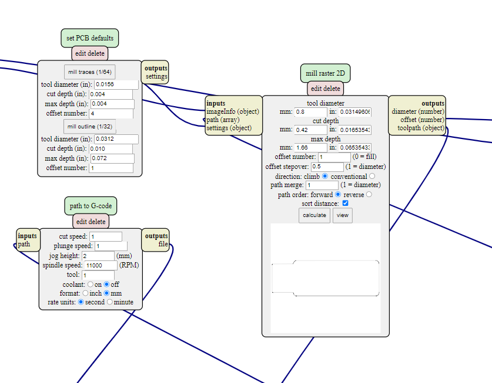
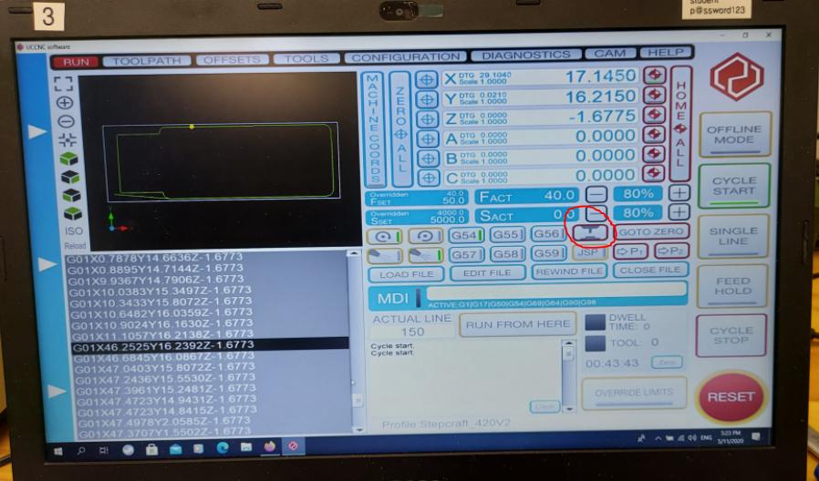
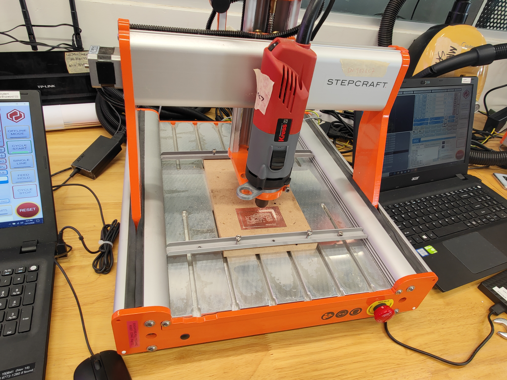
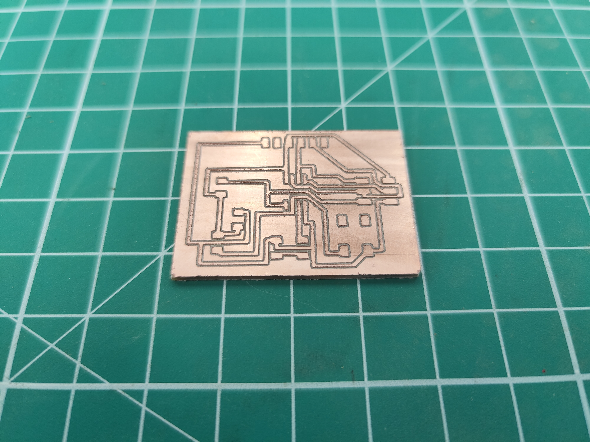

Electronics in Further Fab Lab is a 3 part process on learning how to Design ,Create and Programme our own Printed Circuit Board.
Electronics production is where we shall dive into the manufacturing process of our own PCB board. We will be learning how to use what we've gotten from Electronics Design and turn them into actual functioning boards.
First step of that process would be turning the images that we have into code that the machine is able to read, aka GCODE.
To do this, first we have to go to Mods>Programms>Open server programmes> Mill 2D PCB PNG, then insert the traces. Click here to access --> Mods

After inserting the appropriate images, we must now set the settings that is appropriate for what we are cutting. For cutting the traces, we will be using a cutting tool of thinner diameter(0.4mm flat end mill/20degree) as compared to the outline(0.8mm flat end mill).So here are the settings for the traces(left) and outline(right).
 After inserting all the dimensions, press calculate to get the NC code to start on your milling process. It is recommended to save the code on your thumbdrive.
In the lab, the machine we are using for the milling is the Stepcraft. So the demostration will be a guide on how to use the Stepcraft CNC.
When first entering the Stepcraft interface, you will be greeting with a page like this. To give you some basic idea, you will be able to move the machine(X and Y axis) with the arrow keys and up and down with the page up and down. From here on load in your NC code.
Next, we need to set the x,y and z starting positions for the machine. Firstly, get the probe, and place it on the board that you are going to mill. Then, move the machine until the drill bit it right ontop of the probe. Next, click that button and done. Your z-axis has been set.
Next will be the x and y axis.To set the x and y axis, position the machine until a comfortable position at the bottom left of the board you're milling, and select the 2 buttons to set x and y as 0. This will be where your machine starts cutting from.
After setting the different axis, you're good to go. Turn on the spindle and "Cycle Start". If anything goes wrong, lets say its cutting too shallow or cutting too deep, you can always "Cycle Stop" to pasue the machine.
After running both your codes and changing the tool in between , thsi is what i ended up with. After getting your milled out board with all the traces, you are recommended to remove all excess traces useing a penknife. This will give you a easier time when soldering later on. When soldering, a general tip would be to tin(apply some solder on the part your are about to solder on) the pads before soldering on your components. This would make connecting the components much easier. Here is my finished product.
